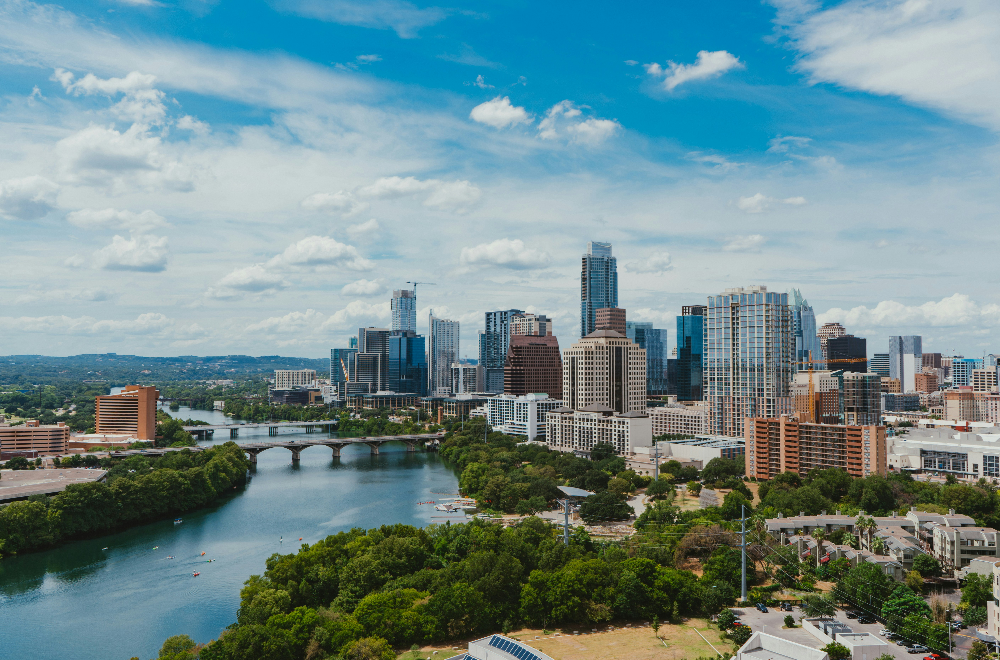

Top Destinations in Texas
Click the images below to learn more about each destination!

Photo by MJ Tangonan on Unsplash
Austin
Experience live music, outdoor activities, and a unique culture in the capital city.

Photo by Kevin Hernandez on Unsplash
Houston
Discover the energy and space capital with a mix of art, science, and cultural experiences.
Photo by Matthew LeJune on Unsplash
San Antonio
Visit the historic Alamo and stroll along the charming River Walk.

Photo by Katie Polansky on Unsplash
Big Bend National Park
Explore the majestic mountains, desert landscapes, and outdoor adventures in this natural treasure.

Photo by David Alvarez on Unsplash
Dallas
Explore this modern metropolis known for its cultural attractions, shopping, and vibrant nightlife.